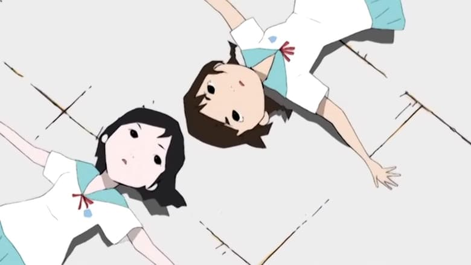

I'm amazed I hadn't heard about the 2004 anime series "Windy Tales" until it was released in North America for the first time in 2015, over a decade later. It has one of the most original visual designs I've seen in a television anime, one of the most original stories I've seen, all in a relatively family-friendly manner. If any anime was made for me, this would be it. But unfortunately, those unique elements are all a detriment to the overall show, rather than a positive. Taking place in a Japanese school, a student discovers a strange phenomonon on the school roof: a stray cat casually flying into the air. A fun premise that leads to seeing a mass of cats, like a vortex of felines, crossing through the sky like a cloud. They have the natural ability to control the wind around them, a secret ability that one of the teachers knows about, but to keep the power safe, he's reluctant to share his knowledge. Over 13 episodes, the group of eager students encourage him to pass on his knowledge, giving them the ability to control wind themselves, while we learn about the teacher's own backstory and his past relationships.Writing about it now, it seems like a promising story. But I can't sugar-coat it: it's horribly dull. There's no real urgency, and the calming visuals and music makes watching the series like cuddling up in a warm blanket, while it tries to tell you something it thinks is important. The two things don't match, and it's hard to keep your attention. Ultimately, the revelations aren't all that interesting anyway, with character drama being the real driver rather than the lore. This is very much a Sunday-afternoon type of show, but one that isn't very compelling, making it easy to forget important details that happened a few episodes prior.If the visual design had been better, it might have helped save the show. I can't say it doesn't suit the meloncholy tone, but it's disappointingly poor in execution quality. Especially since this came from Production I.G., at the time one of the most well-respected television anime studios, known for their work on feature films like "Patlabor" and "Ghost in the Shell," "Blood - The Last Vampire" and an animated sequence in the American film "Kill Bill Volume 1." Those are all films... I guess they also had solid quality in "Ghost in the Shell - Stand Alone Complex." Their fame and success gives I.G. some freedom to experiment, but "Windy Tales" looks like it was made entirely by new interns as an experimental training exercise. Stylistic character designs and contour-line-drawing backgrounds make the whole thing look like it was drawn in a notebook, an inspired choice that gets difficult to look after a couple episodes. Animation quality varies wildly, with usually little to no animation at all. When things do move, again, they move with the quality of a high-schooler's final project. Again, perhaps intentional to portray the kids' point of view. The style looks in-line with what famed director Masaaki Yuasa might have made (his 2008 series "Kaiba" has similar tonal problems, but had more interesting story choices in its favor, as an alternative or related recommendation), but lacks the direction and confidence to make the most of it. The Japanese-only acting and music choices are soft, slow and sweet, to make one accidently fall asleep in the middle of any given episode. My critique is harsh, but it isn't that "Windy Tales" doesn't have any merit. Everything feels fresh and unqiue, and the tone welcoming and relaxing. It's a tale of school friends and their memories of a unusual summer adventure. There's a lot going for it! But the total is less than the sum of its parts. No one element is strong enough, and each thing is too experimental to work well together. Had this been a short novel, or a short film, or even a music video, then perhaps it could have been edited with greater focus. One interesting thing I found on the show's Wikipedia page: in the original broadcast, two episodes of "Windy Tales" would air on the same day, with new episodes being broadcast once a month. That experimental schedule represents "Windy Tales" in a nutshell. I like originality, and am happy that a show like this could get made, let alone be eventually licensed for a DVD release outside of Japan. I'm happy to have seen it. But for all the ambitious tricks it wants to pull off, it never quite sticks the landing with any of them, clumsily falling back to the ground, leaving me unsatisfied. If you're still curious, it might be worth giving a chance, and if nothing else, you'll get to see a herd of cute cats flying in the sky. You don't see that every day.
- "Ani" More reviews can be found at : https://2danicritic.github.io/ Previous review: review_Window_Horses_-_The_Poetic_Persian_Epiphany_of_Rosie_Ming Next review: review_Wizards